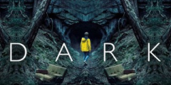
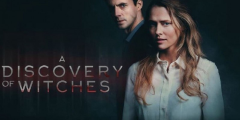

Netflix » Series
TOP Series

-
Cosmos:Possible Words
A journey to new worlds - lost ones and those yet to be discovered.
-

The Walking Dead
The series tells the story of the life of the sheriff's family after the "zombies" - an epidemic of apocalyptic proportions swept the globe.
-

Shameless
About the eccentric Gallagher family with many children and their neighbors who have fun, get into the most incredible situations and try to survive in this world by all possible means, but at the same time work as little as possible.

NETFLIX Series Watch Online

-

13 reasons why
Clay Jensen finds on his doorstep a box of audiotapes recorded by Hannah Baker, who committed suicide. In her notes, Hanna indicated 13 reasons that pushed her to this. And Clay is one of them.
-

Chilling Adventures of Sabrina
Witch Sabrina is trying to find her true self between the natures of a mortal and a witch, while she will have to confront the evil forces that threaten her, her family and the whole world of people.
-

Dark
The story of four families living a calm and measured life in a small German town. The apparent idyll collapses when two children disappear without a trace and the dark secrets of the past are resurrected.
-
Elite
Three teenagers from poor families end up in Las Enchinas, the most prestigious school in the country. Wealthy kids do not like newcomers, and a ruthless battle for power begins.
-

The Cleaning Lady
Experienced doctor Tony De La Rosa travels from Cambodia to the US to treat her seriously ill son. She is in America illegally and earns her bread by cleaning.
-

A Discovery of Witches
A love story set against the backdrop of Oxford academic life. Historian Diana Bishop specializes in ancient manuscripts and one day discovers a magical manuscript in the archives.
NETFLIX - movies and series for free
NETFLIX is an online cinema designed for the convenience of viewers. All materials in Russian are available here in good HD 720p and FullHD 1080p quality. Our ideology is simple: we give users the same content that is on paid streaming services, only without a subscription, absolutely free! Watch online movies, series, cartoons, TV shows, stand-up performances and more. The scriptwriters of the company touch on very topical topics: about love, relationships between people and the life of teenagers during the school period. But there are also documentaries in the film.